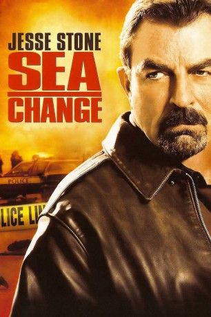

#4446 Jesse Stone 4 - Alte Wunden
Alternativ: Jesse Stone: Sea Change
 
 IMDB-Wertung: 7.3 / 10
IMDB-Wertung: 7.3 / 10  Metascore: 0
Metascore: 0 
Auf den Spuren der Vergangenheit: Ein 15 Jahre zurückliegender Mord an einem kleinen Mädchen weckt Chief Jesse Stones Aufmerksamkeit. Während seiner Ermittlungen entgeht er nur knapp einigen Anschlägen: Offenbar will sich der Bruder eines Toten an ihm rächen...
Jahr: 2007
Dauer: 84 Minuten
FSK:
Land: USA Studio: CBSTonspuren:
Untertitel:
Auflösung: SD (640x352) Größe: 356 MB
Genre: Drama, Krimi
Regisseur: Robert Harmon
Drehbuch: Leonard Hartman
Soundtrack:
Darsteller:
Datei: X:\Person\Jesse Stone\Jesse Stone 4 - Alte Wunden (2007, FSK, 640x352).mkv seit 19.09.2016
Festplatte: HD Collection-7+mehr(A-Z)+Person
 Es gibt insgesamt 12 Filme in der Gruppe 'Person\Jesse Stone'
Es gibt insgesamt 12 Filme in der Gruppe 'Person\Jesse Stone'